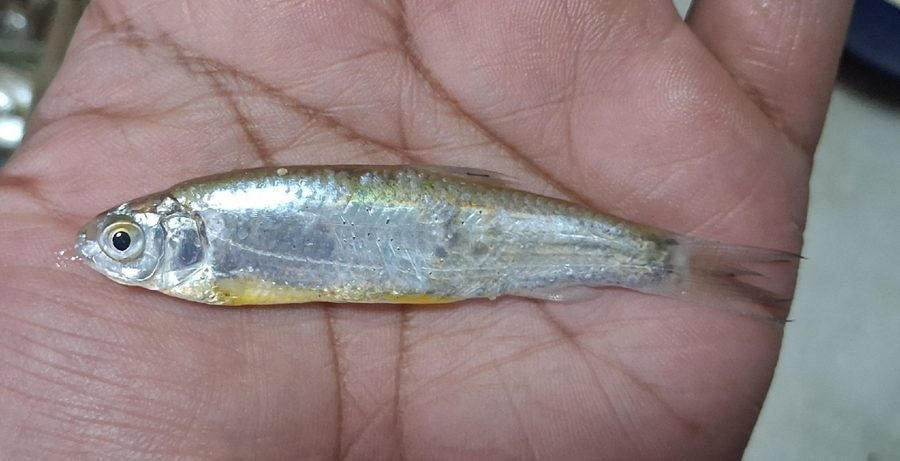

मोरार कार्पलेट मछलीMorar Carplet
Cabdio morar · Cyprinidae · FSH-0048

- Scientific name वैज्ञानिक नाम
- Cabdio morar (Hamilton, 1822)
- Family कुल
- Cyprinidae
- Hindi हिंदी
- मोरार कार्पलेट मछली
- Local names स्थानीय नाम
- morar carplet, morar machhli, morari, chepi morar, morar
- Status here यहाँ की स्थिति
- native
- Movement आवागमन
- Resident, here all year
- Known from कहाँ दर्ज
- Others have published records from the wider Awadh–Purvanchal plain, none yet from Basti–Ayodhya अवध–पूर्वांचल से दूसरों के प्रकाशित अभिलेख, बस्ती–अयोध्या से अभी नहीं
- IUCN IUCN
- not evaluated
- Review समीक्षा
- not yet reviewed
When to look कब देखें
Present all year. साल भर मौजूद।
Uses and possibilities उपयोग और संभावनाएँ
Drawn from the documented uses in the profile below, where each is labelled traditional, current or a research lead. All uses →
Tell it apart from इनसे अलग पहचानें
मोरार कार्पलेट मछली / Morar Carplet
Cabdio morar (Hamilton, 1822) — Cyprinidae
मोरार कार्पलेट मछली — मैदानी नदियों, रेतीले नालों और नहरों में पाई जाने वाली एक छोटी, लंबी और चमकदार चांदी जैसी देसी मछली है। इसका शरीर चिकना और गोल-लंबा होता है, तथा इसका मुँह नीचे की तरफ मुड़ा होता है जिसके निचले जबड़े पर एक कड़ा किनारा होता है। यह नदी की रेतीली तलहटी में जमी काई, शैवाल और कीचड़ को खुरचकर खाती है। स्थानीय ग्रामीण और मछुआरे इसे भोजन के लिए पकड़ते हैं।
Quick Identification त्वरित पहचान
| Feature | Description |
|---|---|
| Size | Small freshwater cyprinid; reaches about 20 cm (Froese & Pauly 2025) |
| Body Shape | Elongate, subcylindrical anteriorly, moderately compressed posteriorly (Hamilton 1822) |
| Mouth & Snout | Snout obtuse; mouth small, inferior, crescentic; lower jaw with a sharp horny edge (Talwar & Jhingran 1991) |
| Barbels | Completely absent on both upper and lower jaws (Talwar & Jhingran 1991) |
| Colour | Shining burnished silver with a golden or greenish-yellow sheen on the back (Hamilton 1822) |
| Fins | Dorsal fin small with 7–8 branched rays; pectoral and pelvic fins pale yellowish (Talwar & Jhingran 1991) |
| Lateral Line | Complete, deeply curved downward, containing 38 to 42 scales (Talwar & Jhingran 1991) |
Field tip: Look along shallow sandy margins and sandbars of flowing rivers. A slender, glistening silvery fish with an inferior crescent-shaped mouth and yellowish fins, swimming actively in loose schools over sandy bottoms, is the Morar Carplet.
हिंदी: रेतीले किनारों पर रहने वाली यह पतली, चांदी जैसी चमकदार मछली है। इसका मुंह नीचे की ओर होता है और मुंह पर कोई मूंछ नहीं होती। इसके पंख हल्के पीले होते हैं।
Morphology आकारिकी
Size as given by FishBase (Froese & Pauly 2025):
| Measurement | Range | Source |
|---|---|---|
| Maximum length | 20 cm | Froese & Pauly (2025), FishBase |
Adult description:
Cabdio morar has an elongate, streamlined body that is subcylindrical in the head and thoracic region and compressed towards the caudal peduncle (Hamilton 1822). The head is moderate, blunt, and rounded; the snout is obtuse and slightly overhangs the mouth (Talwar & Jhingran 1991). The mouth is small, inferior, and arched in a crescentic shape; the lower jaw lacks a lip and is armed with a sharp, horny cutting edge adapted for scraping algae from stones and sand (Talwar & Jhingran 1991). Barbels are completely absent (Hamilton 1822).
The dorsal fin is short, originating noticeably behind the pelvic fin base, and carries 2–3 unbranched and 7–8 branched rays (Talwar & Jhingran 1991). The anal fin has 8 to 10 branched rays. The pectoral fins are pointed and equal to or shorter than the head length. The caudal fin is deeply forked with equal pointed lobes (Hamilton 1822). The lateral line is complete, containing 38 to 42 scales, dipping steeply downward behind the pectoral fins to run along the lower third of the flank before ascending to the caudal base (Talwar & Jhingran 1991).
Live specimens are burnished silver with an attractive greenish-yellow or brassy gloss along the dorsum (Talwar & Jhingran 1991). The flanks and belly are gleaming pure white. The dorsal and caudal fins are translucent with pale yellowish bases, while the lower paired fins are pale lemon-yellow (Hamilton 1822).
हिंदी: इसका शरीर लगभग 20 सेमी तक लंबा, गोल और सुडौल होता है। मुँह नीचे की तरफ होता है जिसके निचले हिस्से में एक खुरचने वाला कड़ा किनारा होता है। शरीर का रंग चांदी जैसा चमकता है।
Behaviour & Ecology व्यवहार और पारिस्थितिकी
The Morar Carplet is a riverine and rheophilic schooling fish adapted to flowing alluvial waterways (Talwar & Jhingran 1991). It prefers flowing stretches of rivers, streams, and sandy channels with clear or slightly turbid water and sandy-gravel substrates.
Schools of several dozen individuals roam continuously over sandy shoals and shallow river bends (Daniels 2002). Using their sharp-edged lower jaws, they scrape epilithic diatoms, filamentous algae, and organic biofilms from sand grains and submerged gravel (Talwar & Jhingran 1991). During the high-water monsoon season, they venture into inundated floodplain canals and oxbow connections, returning to the main river channels as waters recede in late autumn. They avoid densely weeded, stagnant, and oxygen-depleted pools (Daniels 2002).
हिंदी: यह मछली बहते हुए पानी और रेतीली तलहटी वाले नालों में झुंड बनाकर घूमती है। यह रेत और पत्थरों पर जमी काई को खुरच-खुरच कर खाती है और गंदे ठहरे हुए पानी से बचती है।
Life Cycle / Phenology जीवन चक्र
Seasonal phenology in northern Indian alluvial river systems across the agricultural year (Talwar & Jhingran 1991; Daniels 2002):
| Season / Month | Stage | Field Observation |
|---|---|---|
| July–August (Kharif monsoon) | Spawning & dispersal | Schools migrate into flooded gravel shallows and sandy channels to spawn (Talwar & Jhingran 1991) |
| September–November (Post-monsoon) | Juvenile recruitment | Fry school over shallow sandbars feeding on benthic diatoms (Daniels 2002) |
| December–February (Rabi winter) | Sub-adult schooling | Dense aggregations forage along sandy shallows of perennial rivers |
| March–May (Summer / Zaid) | Feeding & gonad development | Continuous grazing on algal blooms on sunlit sandbeds (Daniels 2002) |
| June (Pre-monsoon) | Aggregation for migration | Adults congregate in lower reaches awaiting monsoon freshets (Talwar & Jhingran 1991) |
Breeding takes place during the southwest monsoon when rising river discharges flood sandy shoals and side channels (Talwar & Jhingran 1991). Mating occurs in flowing, well-oxygenated shallows over clean sand or fine gravel. Females shed small, demersal, non-adhesive eggs that disperse across the sand substrate. The eggs hatch after a few days into tiny transparent larvae that take shelter among sand ripples and gravel crevices before gathering into feeding schools (Daniels 2002).
हिंदी: बरसात के समय जब नदियों में नया पानी आता है, यह रेतीले उथले पानी में अंडे देती है। कुछ दिनों में अंडों से बच्चे निकलकर रेत के कणों के बीच छिपते हैं और काई खाकर बढ़ते हैं।
Diet and Feeding Behaviour आहार
Cabdio morar is primarily a benthic herbivore and periphyton grazer (Talwar & Jhingran 1991):
Natural diet components:
- Diatoms, unicellular green algae, and filamentous algae scraped from sand, rocks, and submerged timber (Daniels 2002).
- Organic detritus and fine decomposing plant silt ingested while browsing benthic biofilms (Talwar & Jhingran 1991).
- Small benthic invertebrates, including midge larvae and microscopic nematode worms associated with sandy substrates.
- Micro-crustaceans and rotifers taken occasionally from the water column.
हिंदी: यह मुख्य रूप से शाकाहारी मछली है। यह रेत पर जमी हरी काई, शैवाल, सूक्ष्म कीड़े और कीचड़ में मौजूद सड़े-गले पौधों के बारीक कण खाती है।
Predators / Natural Enemies शत्रु
Documented natural predators in northern Indian alluvial freshwater systems:
- Riverine predatory fishes: Catfishes like Bagarius bagarius (Goonch), Wallago attu (Striped Catfish), and spiny eels like Mastacembelus armatus (Zig-zag Spiny Eel) hunt schools over sandy bottoms.
- Piscivorous birds: Indian cormorants, river terns, and kingfishers strike at schools in clear river shallows.
- Gharials and softshell turtles: Feed on schooling cyprinids along major river channels.
- Water monitors and otters: Capture adults in sandy river shoals.
हिंदी: गूंज और बोआल जैसी बड़ी शिकारी मछलियाँ, बाम मछली, पनकौवे और घड़ियाल रेतीले किनारों पर इस मछली का शिकार करते हैं।
Agricultural / Human Relevance कृषि प्रासंगिकता
Nutritional value and local fishery: The Morar Carplet is a valuable indigenous small food fish across northern and eastern India. Captured in substantial quantities by artisanal fishers using cast nets, shore seines, and bamboo funnel traps in the Ghaghara, Kuwano, and Rapti river basins. It is consumed fresh or sun-dried, fried whole, and provides an important, affordable source of high-quality animal protein, calcium, and phosphorus for riverine fishing families.
Sandbed ecosystem function: By actively scraping and ingesting periphyton and organic silt from river sandbars, Cabdio morar prevents the excessive clogging of sandbeds by filamentous algae, keeping river substrates oxygenated and clean for other aquatic organisms (Talwar & Jhingran 1991).
Traditional: Consumed as an everyday staple fish among riverbank communities in eastern Uttar Pradesh.
Today: Sold fresh in village markets (haats) along riverbanks as an inexpensive local fish.
Research direction (a lead, not a result): Investigating the role of Cabdio morar in controlling biofilm buildup in masonry irrigation channels.
हिंदी: यह ग्रामीण इलाकों में खाई जाने वाली एक लोकप्रिय और सस्ती देसी मछली है। यह नदियों की रेत को साफ रखती है और ग्रामीणों को उत्तम प्रोटीन और खनिज प्रदान करती है।
Expected Locally स्थानीय रूप से अपेक्षित
Not a field record. Written from published accounts for eastern Uttar Pradesh. No confirmed local sighting yet — if you have seen it, that is what the atlas needs.
अभी तक स्थानीय पुष्टि नहीं। यह विवरण प्रकाशित स्रोतों से है, किसी अवलोकन से नहीं।
The Morar Carplet is expected in eastern Uttar Pradesh in perennial rivers, large sandy streams, and major canal networks. Look along shallow sandbars and clear flowing shallows from September through January. GBIF holds published records from the wider Awadh–Purvanchal plain, none yet from Basti–Ayodhya. A clear photograph showing the elongate silvery body, blunt snout with inferior crescent mouth, and deeply curved lateral line, submitted via the About page, would confirm the first local documentation for the project area.
Distribution वितरण
Global range: Widespread across South and Southwest Asia, occurring natively in India, Pakistan, Nepal, Bangladesh, Myanmar, Thailand, and Iran (Talwar & Jhingran 1991).
In India: Found throughout the Indus, Ganges, Brahmaputra, Mahanadi, and Godavari river drainages, from the Himalayan foothills to the plains (Menon 1999).
In Uttar Pradesh: Recorded throughout the Ganges, Ghaghara, Rapti, Ramganga, and Gomti river networks.
In Basti district / eastern UP: Expected as a resident native species in the Ghaghara and Kuwano river channels and major sandy tributaries.
हिंदी: यह भारत, पाकिस्तान, नेपाल, बांग्लादेश और म्यांमार की नदियों में पाई जाती है। उत्तर प्रदेश में घाघरा, राप्ती और कुआनो नदी प्रणालियों में यह सामान्य है।
Research Questions शोध प्रश्न
- How does mechanized riverbed sand mining affect the feeding shoals and substrate biofilms of Cabdio morar? / नदियों से रेत खनन का इस मछली के भोजन और रहने की जगह पर क्या प्रभाव पड़ता है?
- What are the specific dietary preferences of Cabdio morar across pre-monsoon and post-monsoon seasons?
- How do low winter water discharges below barrages influence schooling density in sandy pools? / सर्दियों में बैराज से पानी कम छोड़े जाने पर इस मछली के झुंडों पर क्या असर होता है?
- Can Cabdio morar be integrated into rural earthen ponds to control benthic filamentous algae?
- What are the critical dissolved oxygen thresholds for juvenile survival during pre-monsoon summer lows?
Similar Species मिलती-जुलती प्रजातियाँ
| Species | How to tell apart | हिंदी | |
|---|---|---|---|
| Amblypharyngodon mola ([[mola_carplet\ | Mola Carplet]]) | Mouth wide and directed upward; body deeper and more compressed; lateral line incomplete | मोला कार्पलेट — मुँह ऊपर की ओर होता है और शरीर अधिक चौड़ा होता है |
| Rasbora daniconius ([[slender_rasbora\ | Slender Rasbora]]) | Mouth terminal; flanks marked with a bold continuous black stripe from eye to caudal base | स्लेंडर रासबोरा — मुँह सामने होता है और शरीर पर आंख से पूँछ तक काली धारी होती है |
| Osteobrama cotio ([[cotio\ | Cotio]]) | Body deep rhomboidal with sharp abdominal keel; dorsal spine serrated; anal fin very long | कोटियो — शरीर बहुत चपटा होता है और पेट के नीचे बहुत लंबा पंख होता है |
Field rule: An elongate silvery cyprinid lacking barbels, with a blunt snout, an inferior crescent-shaped mouth bearing a sharp horny edge, and a deeply curved lateral line, is Cabdio morar.
हिंदी: मोला का मुँह ऊपर की ओर होता है और स्लेंडर रासबोरा के शरीर पर काली धारी होती है, जबकि मोरार कार्पलेट का मुँह नीचे की तरफ मुड़ा होता है और शरीर बिना धारी का चमकदार चांदी जैसा होता है।
Taxonomy & Classification वर्गीकरण
Original description. Described by Francis Hamilton in 1822 as Cyprinus morar in An Account of the Fishes Found in the River Ganges and Its Branches, page 264. Type locality: Rivers Yamuna and Tista, India.
Subspecies. Monotypic — no subspecies are currently recognized across its wide Asian range.
Family and order placement. Order Cypriniformes, family Cyprinidae, subfamily Danioninae (or Chedrinae). Long placed in the genus Aspidoparia Heckel, 1847, recent morphological and molecular revisions have synonymized Aspidoparia with Cabdio Hamilton, 1822.
Phylogenetic notes. Cabdio morar is closely related to Cabdio jaya, distinguished by its more elongate body, higher lateral line scale count (38–42 versus 32–34), and crescentic inferior mouth (Talwar & Jhingran 1991).
IUCN status rationale. Not evaluated (NE) on the global IUCN Red List of Threatened Species. It maintains widespread, abundant wild populations across South Asian river basins.
हिंदी: इसका वैज्ञानिक नाम Cabdio morar है और यह Cyprinidae परिवार की सदस्य है। इसे पुरानी पुस्तकों में Aspidoparia morar लिखा गया है।
Photo Gallery फोटो गैलरी
No photos yet — add field photos to media/species/morar_carplet/ and run node scripts/sync_photos.js.
Photos needed आवश्यक फोटो
- [ ] Adult specimen showing burnished silver body and yellow fins (चांदी जैसे शरीर और पीले पंखों की तस्वीर)
- [ ] Ventral close-up of head showing the inferior crescent mouth and horny cutting edge (नीचे की तरफ मुड़े मुँह का दृश्य)
- [ ] School of live fish feeding over clean river sandbars (रेत पर तैरता और चरता झुंड)
- [ ] Lateral line profile displaying the deep downward abdominal curve (पार्श्व रेखा के घुमाव का दृश्य)
References संदर्भ
- Hamilton, F. (1822). An Account of the Fishes Found in the River Ganges and Its Branches. Archibald Constable and Company, Edinburgh, p. 264.
- Talwar, P. K. & Jhingran, A. G. (1991). Inland Fishes of India and Adjacent Territories, Vol. 1. Oxford & IBH Publishing Co., New Delhi, pp. 338–339.
- Menon, A. G. K. (1999). Check list - fresh water fishes of India. Records of the Zoological Survey of India, Occasional Paper No. 175, p. 38.
- Daniels, R. J. R. (2002). Freshwater Fishes of Peninsular India. Universities Press, Hyderabad, pp. 58–60.
- Froese, R. & Pauly, D. (Eds.) (2025). FishBase. World Wide Web electronic publication.
- GBIF Occurrence Data — Cabdio morar, India (2025).
Source file: species/fauna/fish/morar_carplet.md